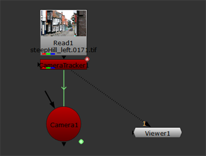
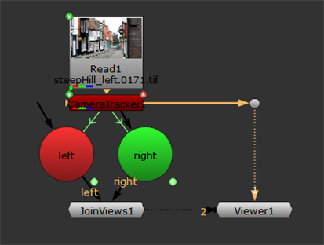
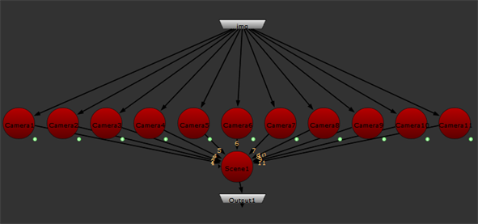

Using the tracking and solve data, CameraTracker can create linked or baked cameras that emulate the original camera track on set. You can create a single camera or a camera rig for multi-view projects, depending on your script.
| 1. | Select Camera from the Export dropdown menu. |
| 2. | Enable or disable the Link output control to determine whether the Camera node is expression linked or baked: |
• When enabled, CameraTracker creates an expression linked camera so that any adjustments made in the properties panel Output > Camera controls update the camera.
• When disabled, any adjustments made are ignored by the camera.
| 3. | Click Create. |
A Camera node is added to the Node Graph. Expression linked cameras are linked to the CameraTracker node with a green expression arrow.

Camera node data can be used in various Nuke workflows, such as Creating Dense Point Clouds and Generating Depth Maps.
CameraTracker creates as many cameras as you have views in you script, but the most common use of rigs is for stereoscopic scripts with left and right views.
| 1. | Select Camera rig from the Export dropdown menu. |
| 2. | Enable or disable the Link output control to determine whether the Camera nodes are expression linked or baked: |
• When enabled, CameraTracker creates expression linked cameras so that any adjustments made in the properties panel Output > Camera controls update the cameras.
• When disabled, any adjustments made are ignored by the cameras.
| 3. | Click Create. |
NOTE: If you try to create a rig with only one view, an error is displayed.
A Camera node is added to the Node Graph for each view present in the script. Expression linked cameras are linked to the CameraTracker node with a green expression arrow.

Camera node data can be used in various Nuke workflows, such as Creating Dense Point Clouds and Generating Depth Maps.
CameraTracker can automatically create a camera for each solved frame.
| 1. | Select Camera set from the Export dropdown menu. |
| 2. | Enable or disable the Link output control to determine whether the cameras are expression linked or baked: |
• When enabled, CameraTracker creates expression linked cameras so that any adjustments made in the properties panel Output > Camera controls update the cameras.
• When disabled, any adjustments made are ignored by the cameras.
| 3. | Click Create. |
If you're processing a large amount of frames, a confirmation dialog displays.
| 4. | Click Yes to continue or No to cancel the export. |
CameraTracker adds a Group node to the Node Graph containing Camera nodes for every frame specified connected to a Scene node.
| 5. | Double click the Group to open the properties panel, then click the S above the panel to open the group in the Node Graph. |

You could then write the camera data to an .fbx file ready for import into Modo or Maya for projection painting work.
|
|